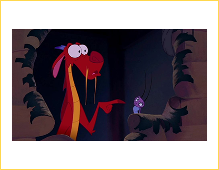
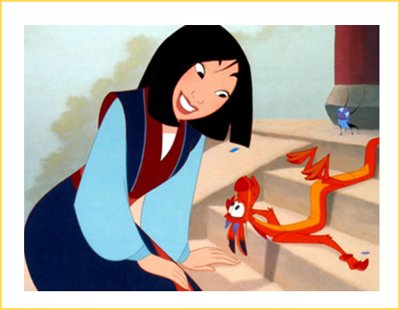
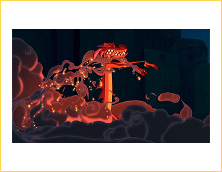

Relevamiento Mushu
Apariciones
Cuando Mulan decide ir a la guerra en lugar de su padre, la abuela pide en forma de rezo a sus ancestros que la protejan. Ésto hizo que el ancestro principal despierte, y junto con él Mushu. Siendo un guardián degradado, Mushu ahora solo cumple el rol de hacer sonar el gong.
Apariencia
Chiquitito, pero nunca se olvida que es dragon, normalmente se lo confunden con una lagartija. Suele disfrazarse para causar temor a sus amenazas, con la ayuda de sus bigotes largos y amarillentos, sus dientes afilados y aspecto rojizo. Lo logra casi siempre.
Personalidad
Actua mucho por intuición. Toma decisiones sin pensar demasiado y suele estar seguido en problemas por ello. Es torpe, dramatico y muy quejón.. especialmente con su jefe, el guardián principal de la familia Mulan, que no confia en él para ninguna tarea.
Apariciones destacadas